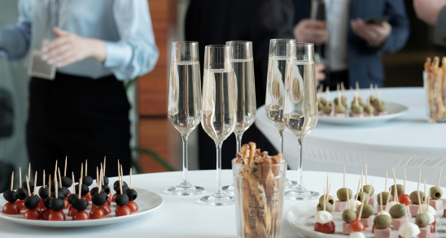
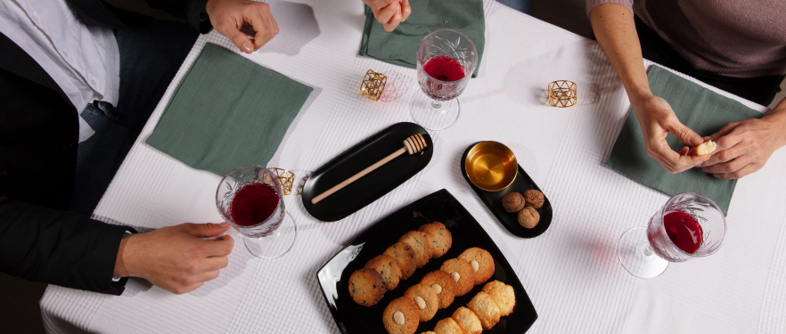
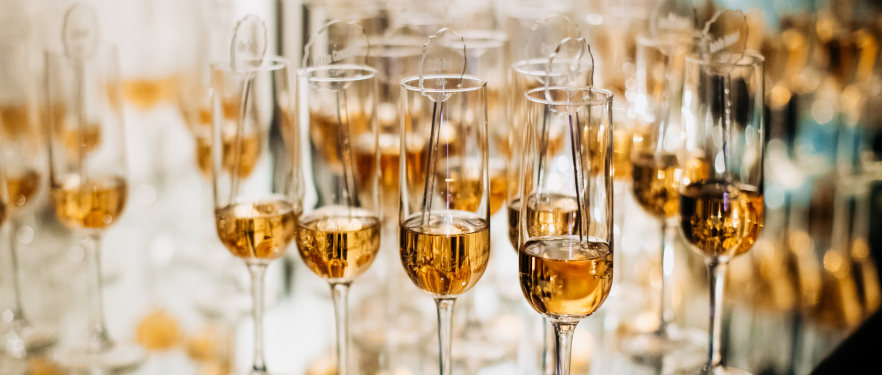
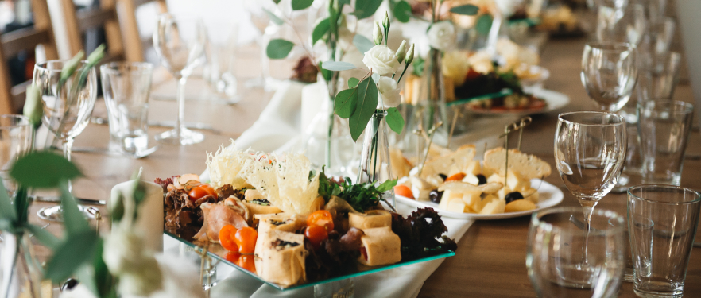

How to Create a Stunning Grazing Table for Your Next Event
Grazing tables have become a popular choice for events, offering a visually stunning and interactive way to serve food. Whether you're hosting a wedding, corporate gathering, or casual party, a well-curated grazing table can be a show-stopping centerpiece that delights guests and sparks conversation. Here's how to create a stunning grazing table for your next event:
1. Choose a Theme or Color Scheme: Start by selecting a theme or color scheme that sets the tone for your event. Whether it's rustic chic, tropical paradise, or modern elegance, choose elements that reflect the style and ambiance you want to create. This will guide your selection of ingredients and decorations for the grazing table.
2. Select a Variety of Ingredients: The key to a successful grazing table is variety. Include a diverse selection of cheeses, cured meats, fresh fruits, vegetables, nuts, dips, bread, crackers, and other accompaniments. Aim for a balance of flavors, textures, and colors to create visual interest and cater to different tastes.
3. Curate High-Quality Ingredients: Invest in high-quality ingredients that showcase the best flavors and textures. Opt for artisanal cheeses, locally sourced charcuterie, and fresh, seasonal produce whenever possible. Don't be afraid to mix and match flavors to create unique combinations that surprise and delight your guests.
4. Focus on Presentation: Presentation is key when it comes to a grazing table. Arrange ingredients in an artful manner, layering textures and colors to create visual impact. Use a variety of serving platters, boards, and bowls to add dimension and height to the table. Garnish with fresh herbs, edible flowers, and decorative accents to elevate the presentation even further.
5. Consider Dietary Preferences: Take into account any dietary preferences or restrictions among your guests when planning your grazing table. Include options for vegetarians, vegans, and those with gluten or dairy intolerances. Clearly label each item to indicate ingredients and allergens, allowing guests to make informed choices.
6. Create a Focal Point: Designate a focal point on the grazing table to draw attention and create a focal point. This could be a striking centerpiece, such as a wheel of cheese, a charcuterie cone, or a cascading fruit display. Surround the focal point with complementary elements to enhance its visual impact.
7. Encourage Interaction: One of the benefits of a grazing table is its interactive nature. Encourage guests to mingle and graze at their leisure by arranging the table in a flowing layout that invites exploration. Provide plenty of serving utensils, napkins, and plates to make it easy for guests to help themselves.
8. Refresh and Refill Regularly: Throughout the event, monitor the grazing table and replenish ingredients as needed to keep it looking fresh and inviting. Remove any empty or picked-over items and replace them with fresh selections to ensure a continuous supply of delicious offerings.
9. Capture the Moment: Don't forget to capture the beauty of your grazing table with photos. Document the setup before guests arrive, as well as throughout the event as it evolves. Share your photos on social media or with guests as a memento of the occasion.
10. Enjoy the Experience: Above all, enjoy the experience of creating and sharing a stunning grazing table with your guests. Embrace the creativity and artistry of the process, and take pride in knowing that you've created a memorable centerpiece that enhances the enjoyment of your event.
In conclusion, creating a stunning grazing table for your next event is a rewarding and enjoyable endeavor. By following these tips and embracing your creativity, you can design a visually stunning and delicious spread that wows your guests and leaves a lasting impression.
